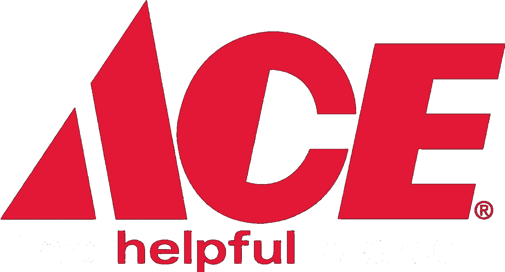

Ace Location Studio
Clear Locations
New Planogram
Settings
Snyder's Ace Hardware · Media, PA
Update & Restart
✕
Lost connection to Ace Location Studio.
The app's background process isn't responding — close this window and start AceLocationStudio.exe again.
Your last change didn't save.
Keep this window open and try again — if it keeps happening, close the app and start it again.